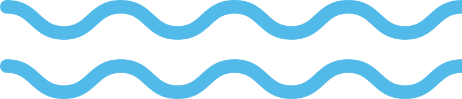

Ancient
Mediterranean
Shipwrecks

Click on Shipwreck locations for more information!
This map shows shipwrecks that sunk before 1500 CE utlizing the Oxford Roman Economy Project Shipwreck database.
Only ancient debris assumed to have come from a shipwreck rather than those lost or dumped overboard has been included.
Coordinates should not be taken as accurate at a fine scale. Precise locations are not revealed by excavators to prevent pillaging.